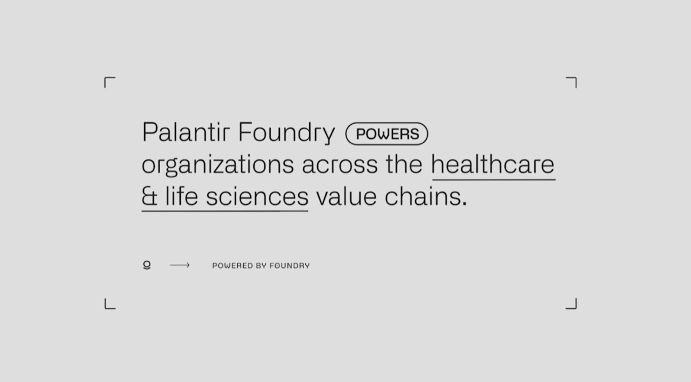

Palantir Issues Additional Details About Life Sciences Capabilities to be Shown at “Double Click” on Wednesday, April 14, 2021

丹佛--(商业资讯)--Palantir Technologies (NYSE:PLTR) 今日发布了其将于2021年4月14日星期三上午11点（美国东部时间）在“Double Click”生命科学演示中重点展示的 Palantir Foundry 功能的更多细节。
Palantir 在生命科学领域的客户涵盖制药公司、研究机构、医疗系统等。这些客户依靠 Foundry 安全且协作的架构来发现和开发药物、管理商业化发布、开展临床研究以及分发疫苗。例如：
美国国立卫生研究院（NIH）国家新冠队列协作组（N3C）的1,000多名研究人员使用 Foundry 安全地维护着世界上规模最大的患者级 COVID-19 电子健康档案（EHR）数据资产之一，并在150多个研究项目上开展协作（如以下 N3C 的视频演示所示).
英国国家医疗服务体系（NHS England）的数千名全科医生负责订购、分配、追踪和交付该国迄今为止接种的2,900多万剂疫苗中的每一剂（详见 英国政府关于 COVID-19 数据与洞察的网站).
在首期 Palantir 的 Double Click 系列，工程师们将演示 Foundry 的最新功能，以及 Foundry 之上提供的若干新 Archetype，它们使这类工作只需点击几下即可完成，包括：
在任何环境中进行可复现的研究。 Foundry 的可互操作、模块化且开放的架构使不同技术水平的用户能够集成任何数据、使用任何工具、管理任何模型，并用任何语言编写代码——同时保持其分析工作端到端的可复现性、透明性和安全性。Foundry 将其治理和知识管理功能与 RStudio 或 HPC 集群等常见数据科学环境相集成，使用户能够使用其选择的任何库进行可复现的工作——从 plink 等专业生物信息学工具，到 scikit-learn、tensorflow 或 MLlib 等机器学习库。
基于目的的访问控制。 Foundry 的基于目的的访问控制（Purpose-Based Access Controls）Archetype 可根据特定数据源或数据集的预期用途，自动或以管理方式分配权限。通过将数据访问请求与相关研究的背景一起系统化地编码，这些访问控制为治理管理员提供了细粒度的洞察，可了解每项数据被用于哪些分析、由谁使用以及出于何种原因。
系统化的模型管理。 Foundry 的模型管理（Model Management）Archetype 支持预测模型的治理和部署，包括在 Foundry 之外开发的模型。研究人员可以轻松复现结果、追踪模型每个版本的开发过程、在上游源数据发生变化时自动更新模型、比较性能指标，并为发布到预发布或生产环境的版本打上标签。模型可以部署在 Foundry 内部（批处理或流式处理，或用于即席查询的 API 端点），也可以部署到外部系统（包括专用硬件）。部署的健康检查、遥测和丰富的模型监控功能帮助组织超越模型漂移的范畴，在真实场景中理解和管理其模型。
用于标准化数据模型的即开即用管道模板。 Foundry 的管道（Pipeline）Archetype 可部署预构建的数据管道，将 Optum 理赔数据或 TriNetX 等常见的现实世界数据源转换为标准数据模型（如 OMOP）。这使研究人员能够在不同数据源之间轻松切换，并复用开源社区已定义的队列代码列表或分析方法。对于历史随机对照试验等独特数据源，Foundry 由机器学习驱动的实体解析（Entity Resolution）Archetype 提供了相应框架，可自动建议到用户自定义数据模型的映射，并支持人工确认。
有关由 Palantir Foundry 支持的研究项目和出版物的示例，请参见下方列表。
关于 Palantir Double Click
Palantir 软件被全球40个行业的客户所使用。Double Click 是 Palantir 的系列软件演示活动，展示该公司的平台如何在这些行业和客户中使用。
需要提前注册，注册地址为 https://palantir.events/doubleclick。名额有限，注册将在活动开始前24小时截止。有关本活动的更多信息，请访问 https://www.palantir.com/double-click 或发送电子邮件至 double-click@palantir.com.
关于 Palantir Technologies Inc.
Palantir Technologies Inc. 为现代企业构建并部署操作系统。更多信息请访问 https://www.palantir.com.
前瞻性声明
本新闻稿包含符合经修订的1933年《证券法》第27A条和经修订的1934年《证券交易法》第21E条含义的前瞻性陈述。这些陈述可能涉及（但不限于）Palantir对本活动的期望，以及对其软件平台的预期性能和效益或预期更新的期望。前瞻性陈述本身存在风险和不确定性，其中一些无法预测或量化。前瞻性陈述基于作出这些陈述时可获得的信息，并基于当时的当前预期以及管理层对未来事件的信念和假设。这些陈述受风险和不确定性影响，其中许多涉及超出我们控制范围的因素或情况。这些风险和不确定性包括（但不限于）：我们满足客户独特或预期需求的能力；我们的平台未能令客户满意或未能按预期运行；任何软件和实施错误的频率或严重程度；以及我们平台的可靠性。有关这些及其他风险和不确定性的更多信息，包含在我们不时向美国证券交易委员会提交的文件中。除法律要求外，我们不承担因新信息、未来发展或其他原因而公开更新或修订任何前瞻性陈述的义务。
第三方网站和参考资料
本新闻稿包含指向第三方网站或信息的链接，这些内容仅供参考，不通过引用并入本文。您须自行对此类信息进行评估，我们对其准确性或完整性不作任何陈述，也不承诺核实或更新任何此类信息。包含第三方链接并不构成我们对所链接网站或其中包含的任何信息或其他链接信息的认可。
本文中提及的所有第三方产品、出版物和名称均为其各自所有者的财产。使用此类引用仅用于识别目的，并不意味着与这些第三方有任何关联或获得其认可。
由 Palantir Foundry 支持的部分出版物
Shallcross 等，2021 年。 与英格兰长期护理机构中SARS-CoV-2感染和暴发相关的因素：一项全国性横断面调查。 The Lancet Healthy Longevity。
Dorjsuren 等，2021 年。 通过对 Plasmodium 血液期和肝脏期寄生虫进行定量高通量筛选而发现的化学预防性抗疟药物。Scientific Reports。
Haendel 等，2020 年。 国家COVID队列协作（N3C）：原理、设计、基础设施和部署。JAMIA。
Vellanki 等，2020 年。 评估接受免疫检查点抑制剂（ICIs）治疗的复发性或转移性头颈部鳞状细胞癌（R/M HNSCC）患者中抗生素使用与生存之间的相关性。 ASCO 2020。
Weinstock 等，2020 年。 抗生素使用时机对接受免疫检查点抑制剂（ICIs）治疗的尿路上皮癌患者临床结局的影响。 ASCO 2020。
Gao 等，2019 年。 CDK4/6抑制剂治疗激素受体阳性、HER2阴性、晚期或转移性乳腺癌患者：美国食品药品监督管理局汇总分析。The Lancet Oncology。
Mitchell 等，2019 年。 非裔美国人肺腺癌中复发性PTPRT/JAK2突变。Nature Communications。
Hub 设置
Lisa Gordon media@palantir.com